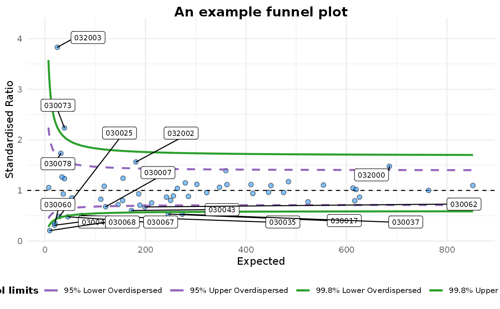

An implementation of funnel plots for indirectly standardised ratios, as described by Spiegelhalter (2005) <doi:10.1002/sim.1970>. There are several parameters for the input, with the assumption that you will want smooth, overdispersed, funnel control limits. Limits may be inflated for overdispersion based on the DerSimmonian Laird \(\tau^2\) additive random effects models, originally described for meta-analysis.
funnel_plot( numerator, denominator, group, data_type = "SR", label_outliers = 99, Poisson_limits = FALSE, OD_adjust = TRUE, sr_method = "SHMI", winsorise_by = 0.1, title = "Untitled Funnel Plot", multiplier = 1, x_label = "Expected", y_label, xrange = "auto", yrange = "auto", return_elements = c("plot", "data", "limits"), theme = funnel_clean() )
| numerator | A vector of the numerator (observed events/counts) values. Used as numerator of the Y-axis |
|---|---|
| denominator | A vector of denominator (predicted/population etc). Used as denominator of the Y-axis and the scale of the x-axis |
| group | A vector of group names as character or factor. Used to aggregate and group points on plots |
| data_type | A string identifying the type of data used for in the plot, the adjustment used and the reference point. One of: "SR" forindirectly standardised ratios, such SHMI, "PR" for proportions, or "RC" for ratios of counts. Default is "SR". |
| label_outliers | Add group labels to outliers on plot. Accepted values are: 95 or 99 corresponding to 95% or 99.8% quantiles of the distribution. Default=99 |
| Poisson_limits | Draw exact Poisson limits, without overdispersion adjustment. (default=FALSE) |
| OD_adjust | Draw overdispersed limits using hierarchical model, assuming at group level, as described in Spiegelhalter (2012) <doi:https://doi.org/10.1111/j.1467-985X.2011.01010.x>. It calculates a second variance component ' for the 'between' standard deviation (Tau2), that is added to the 'within' standard deviation (sigma) (default=TRUE) |
| sr_method | Method for adjustment when using indirectly standardised ratios (type="SR") Either "CQC" or "SHMI" (default). There are a few methods for standardisation. "CQC"/Spiegelhalter uses a square-root transformation and Winsorises (rescales the outer most values to a particular percentile). SHMI, instead, uses log-transformation and doesn't Winsorise, but truncates the distribution before assessing overdisperison. Both methods then calculate a dispersion ratio (phi) on this altered dataset. This ratio is then used to scale the full dataset, and the plot is drawn for the full dataset. |
| winsorise_by | Proportion of the distribution for winsorisation/truncation. Default is 10 % (0.1). Note, this is applied in a two-sided fashion, e.g. 10% refers to 10% at each end of the distribution (20% winsorised/truncated) |
| title | Plot title |
| multiplier | Scale relative risk and funnel by this factor. Default to 1, but 100 sometime used, e.g. in some hospital mortality ratios. |
| x_label | Title for the funnel plot x-axis. Usually expected deaths, readmissions, incidents etc. |
| y_label | Title for the funnel plot y-axis. Usually a standardised ratio. |
| xrange | Manually specify the y-axis min and max, in form c(min, max), e.g. c(0, 200). Default, "auto", allows function to estimate range. |
| yrange | Manually specify the y-axis min and max, in form c(min, max), e.g. c(0.7, 1.3). Default, "auto", allows function to estimate range. |
| return_elements | a vector of elements to return, options include "plot" for ggplot2 object, "data" for data after processing, and "limits" for control limit lookup table used in the plot. Default is all three objects. |
| theme | a ggplot theme function. This can be a canned theme such as theme_bw(), a theme() with arguments, or your own custom theme function. Default is new funnel_clean(), but funnel_classic() is original format. |
A list containing [1] the funnel plot as a ggplot2 object, [2] the base table for the plot, [3] the limits table.
Outliers are marked based on the grouping, and controlled by `label_outliers` .
Overdispersion can be factored in based on the methods in Spiegelhalter et al (2012) <doi:https://doi.org/10.1111/j.1467-985X.2011.01010.x>, set `OD_adjust` to FALSE to suppress this.
To use Poisson limits set `Poisson_limits=TRUE`. This uses 95
It deliberately avoids red-amber-green colouring, but you could extract this from the ggplot object and change manually if you like.
Statistical methods for healthcare regulation: rating, screening and surveillance. Spiegelhalter et al (2012) <doi:https://doi.org/10.1111/j.1467-985X.2011.01010.x>
Funnel plots for comparing institutional performance. Spiegelhalter (2005) <doi:10.1002/sim.1970>
Handling over-dispersion of performance indicators. Spiegelhalter (2005) <doi:10.1136/qshc.2005.013755>
#' # We will use the 'medpar' dataset from the 'COUNT' package. # Little reformatting needed library(COUNT)#>#>#> #>#> #> #>#>#>data(medpar) medpar$provnum<-factor(medpar$provnum) medpar$los<-as.numeric(medpar$los) mod<- glm(los ~ hmo + died + age80 + factor(type) , family="poisson", data=medpar) summary(mod)#> #> Call: #> glm(formula = los ~ hmo + died + age80 + factor(type), family = "poisson", #> data = medpar) #> #> Deviance Residuals: #> Min 1Q Median 3Q Max #> -5.7309 -1.9554 -0.5529 0.9717 14.5487 #> #> Coefficients: #> Estimate Std. Error z value Pr(>|z|) #> (Intercept) 2.26875 0.01246 182.011 < 2e-16 *** #> hmo -0.07637 0.02393 -3.192 0.00142 ** #> died -0.24574 0.01826 -13.458 < 2e-16 *** #> age80 -0.02141 0.02050 -1.045 0.29617 #> factor(type)2 0.24921 0.02099 11.871 < 2e-16 *** #> factor(type)3 0.74869 0.02627 28.496 < 2e-16 *** #> --- #> Signif. codes: 0 ‘***’ 0.001 ‘**’ 0.01 ‘*’ 0.05 ‘.’ 0.1 ‘ ’ 1 #> #> (Dispersion parameter for poisson family taken to be 1) #> #> Null deviance: 8901.1 on 1494 degrees of freedom #> Residual deviance: 7977.7 on 1489 degrees of freedom #> AIC: 13705 #> #> Number of Fisher Scoring iterations: 5 #># Get predicted values for building ratio medpar$prds<- predict(mod, type="response") # Draw plot, returning just the plot object fp<-funnel_plot(denominator=medpar$prds, numerator=medpar$los, group = medpar$provnum, return_elements=c("plot")) fp#> $plot#>